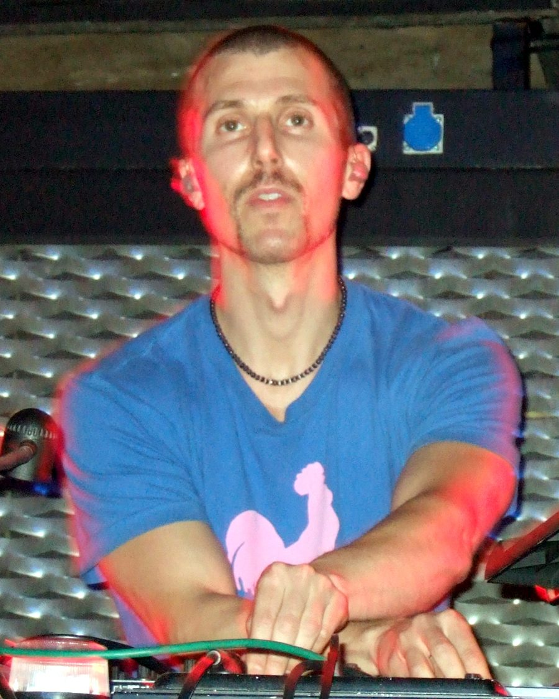

Josh Wink [Audio]: Stronger than ever



STREAMING AUDIO INTERVIEW
US techno mainstay has been a fixture on the international touring circuit since his seminal anthem Higher State of Consciousness began melting brains back in the early 90s, known for his prolific production schedule as well as his beautifully crafted DJ sets. You’d expect things to be slowing down after such a tenure in the scene, but as he tells ITM, 2009 was arguably his biggest year yet.
“Believe it or not, it’s actually been the busiest summer and autumn for me ever,” Wink told ITM. “And I say that with great pride, considering I’ve been doing this for a really long time. A lot of my colleagues have released music in the past, and get sick, burnt out or forgotten over the years. I’m so fortunate that I can keep doing what I do so many years after. And with the release of my A Banana is Just a Banana in February, I think it really helped open the doors for me to some of the younger audience that may not know me so well, or just get the older people back into me as well.”
Of course, he’ll be wrapping up his year with a performance on the Summadayze tour around the country, which will include a highly anticipated sunrise set at the debut of Summanights in Sydney. ITM’s Angus Paterson finds out more from the legend that is Josh Wink as it gets ever more close.
Josh Wink tour dates:
Thur 31st Dec – Summanights, Sydney
Fri 1st Jan – Summadayze, Melbourne
Fri 1st Jan – Summadayze, Adelaide
Sun 3rd Jan – Summadayze, Perth
Sat 9th Jan – Summafieldayze, Gold Coast